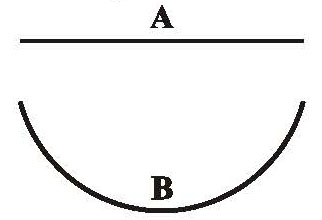
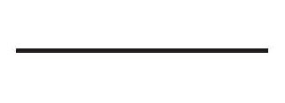

Беседа 2520 от 3877 · Беинса Дуно
Основната мярка
"Добрата молитва"
Коя беше основната мисъл на миналата лекция? ("Да освободим ума и чувствата от човешките наслойки и да освободим Божественото в нас.")
Как ще стане това. Казва: "Искам да си съградя къща и да живея в нея. Но как ще я съградя?" Съграждането е важна работа. Като се съгради, може да се живее. Сега едно от най-простите правила ще намерите в растителното царство. Много правила има, но житеното зърно, докато не му туриш един пръст почва отгоре, то не расте. Защото, щом му туриш известно препятствие, веднага в него се събужда желание да расте. Значи на човека трябва да се тури едно малко препятствие. И най-малкото препятствие, което човек среща в живота си, то е малката пръст, турена отгоре. Ако той вярва в това, ще започне един вътрешен импулс. Но именно това е най-мъчното, да повярва човек, че мъчнотиите служат като един импулс. Всяка една мъчнотия, която човек среща в живота си, той счита за едно голямо препятствие, което дава един вътрешен импулс. Трябва да се спре човешката енергия. Сега вземете един лекар, за да ви излекува, той ще даде известно лекарство. Лекарството само по себе си какво ще допринесе? Има лекарства, които реагират върху човешкия организъм, правят известно съединение. Но някой път на един човек може да му се даде лекарство, което не съдържа тия елементи, но само ако вярва, пак може да оздравее. На някой човек може да му кажеш само: ти ще оздравееш, и той оздравява. Ако кажеш някому: ти ще се разболееш, и той се разболява. Ако кажеш някому: ти ще оживееш, и той оживява. Ако кажеш някому: ти ще умреш, и той умира. Някой сега може да каже: "Как става това?"
Представете си някой цар казва: "Ти ще умреш." Той казва: "Да те обесят." Някой е затворен, той казва: "Ти ще бъдеш свободен." Царят казва: "Пуснете го, освободете го." Зависи някой път кой казва. Ако царят казва: ще живееш, и така става. Това е само за изяснение. Ако той каже: ще те пуснат от затвора, и действително ще те пуснат. Ако каже: ще умреш, и това ще стане. Питам, в дадения случай какво трябва да прави човек? За да не умре човек, какво трябва да прави. Имаме една голяма философия. Много проста работа е. Сега има много неща, които хората говорят в приложението. Някой път хората говорят: "Не вървете против течението." Така е някъде, но някъде ще те заставят да вървиш против течението. Какъв ще бъде резултатът, ако вървиш против едно течение или ако вървиш с течението, каква е разликата? Ако работиш при благоприятни условия, ще иждивиш по-малко енергия, ако работиш при неблагоприятни условия ще иждивиш повече енергия при движението. Щом се харчи повече енергия, има препятствия на пътя, щом се харчи повече енергия, ти си заставен да вървиш против течението. Какво трябва да правиш тогава? Енергията трябва да се харчи. Ако двойно харчиш, тройно, четворно, десет пъти ако харчиш енергия. Енергията трябва да се харчи, защото законът е така: всякога харчиш двойно повече енергия, ако вървиш против течението. Ако вървиш заедно с течението, ще спечелиш. Кое е по-хубаво, с течението ли да вървиш, или против течението? Да допуснем, че човек отвън си е объркал пътя, против течението върви. Но когато човек влезе в едно противоречие, че със себе си не може да се справи. Най-първо ние се оплакваме, че с окръжаващите хора не можем да се справим. Не може човек да се справи с природата: че времето е студено или че е горещо, или ветровито. Един земеделец не може да се справи с почвата. Тия противоречия са отвън. Но когато противоречията дойдат в човека, тогава де е природата? Тогава ще учите закона на туристите. Допуснете, че вие се качвате в една планинска местност, почвата е гладка или зимно време заледено е така, че се пързаля, направиш една крачка напред, четири назад. Какво трябва да правиш? Ще имаш обуща с гвоздеи, че като туриш краката, да се забият. После ще имаш гега и с нея ще копаеш дупки, полека, внимателно ще стъпваш. Няма да вървиш как да е. При най-малкото подхлъзване може да идеш там, дето не трябва. Представете си, някой казва: "Господ ме пази." Отива друг, който, като тебе не вярва, казва: "Той Господ няма какво да ме пази, аз ще се пазя." Ти не взимаш предвид нещо, не внимаваш и очакваш Господ да те пази в планината. Ти ще си пукнеш на двайсет места главата. Онзи, който никак не вярва, е внимателен, никак не си пука главата. Сега ще се зародят две различни вярвания. Казва, с вяра тази работа става, другият мисли, че с вяра не става, но с пазене. Кой е на правата страна? Който вярва и не взема предпазителни мерки на правата страна ли е? Много религиозни хора не могат да разберат. Има светски хора, които работят и стават богати. Религиозният човек, той само седи и се моли, и мисли, като се молил, защо не е станал богат. Че с молитва богатство добива ли се? Да обясня. Има една мисъл необяснена. Казва: "Защо Господ да не ми помогне?" Ето къде остава въпросът неразрешен. Да допуснем, че ти искаш хляб, казва: "Гладен съм, гладен съм." Оставя хляб на масата и си заминава. Ти седиш и казваш: "Какво мога да направя с този хляб?" Ти започнеш да мислиш за колко време може да ти стигне този хляб. Казваш: "За днес, за утре." Целия ден мислиш, размишляваш, за колко време ще ти стигне, не го ядеш. Казваш: "Ако изям този хляб, какво ще стане?" Ще го изядеш, работата е свършена. Ще седнеш да ядеш. Ще кажеш другата философия: "Един хляб като изям, какво ще стане?" В дадения случай ти ще се избавиш от една мъчнотия, от глада. Яж хляба, пък утре какво ще стане, то е друг въпрос. Някои от вас казват: "Аз не съм добър човек." "Не съм добър човек", изтълкувайте го какво подразбира. "Аз не съм добър човек" – аз съм гладен, аз съм жаден, аз съм невежа, аз съм сприхав, аз съм това, аз съм онова. Сприхав си. Защо си сприхав? Турете го в естественото положение. Ти си сприхав, искаш да свършиш нещо, но бързаш да го свършиш. Събрал си, събрал си, че после бързаш да го свършиш. Българите имат една поговорка, че на кокошката като припари, като наближи да снесе яйцето, тогава търси полог. Тя трябва да намери малко по-рано, да дойде там. Някой път не остава време, че го снесе на пътя. Както юрдечките, както е във водата, снесе го яйцето, че гледаш водата носи едно яйце. Може да се приведат примери. Та в приложението на примерите има придобиване на живота.
Вие за пример още не знаете кои са причините за лошия живот. Най-елементарните противоречия, най-елементарните спънки кои са? Искаш да живееш, не можеш да живееш. Искаш по някой път да ти върви. Заричаш се, че няма да говориш, а пък във всеки говор ти – мерудия. Ами че учените хора говорят колко е далеч слънцето, какво мнение ще дадеш? Не си учен по туй, какво мнение ще дадеш, колко е далеч слънцето? Ти можеш да кажеш, слънцето когато изгрява, е по-далеч от земята, а пък на обед е по-близо. Ще приведете някои анекдоти. Англичаните казват: някой умник мисли, че е разрешил въпроса. Султанът питал един турски философ, от земята до слънцето колко има. После го питал от земята до месечината колко е. После от този свят до оня свят колко далеч е. Иде философът и носи голямо кълбо, и казва: "Месечината е далеч от земята, колкото е дълъг конецът на това кълбо. Ако не вярваш, хвани единия край, ти нагоре, аз надолу, провери. Аз сам бях и навих това кълбо, толкова е далеч. Колкото прежда съдържа това кълбо, толкова е далеч месечината от земята. Аз ходих, проверих. Ти, ако не вярваш, вземи единия край, може да провериш. От слънцето до земята колко е далеч? Понеже слънцето, след като се скрие, след дванайсет часа пак иде, то толкова е далеч от слънцето. А колко е далеч от оня свят, казва, виж, там е далеч, понеже баща ми четиридесет години как е заминал, и още не се е върнал."
Ама това не е философия. Това не е наука. Тъй всички говорите. Това не е наука. И по някой път в някоя беседа ще приведат пример, че някой светия как живял, че двайсет години се подвизавал и станал светия. Тази е неразбрана работа. Двайсет години живял, но ти нищо не знаеш за неговия живот, как се подвизавал, как живял, какви мъчнотии имал, как преодолял. Този човек има знание.
Казвам сега, за всяко едно постижение си има начин. Има такова изкуство, както когато сега фотографът намества апарата. Твоята работа е да фотографираш човека. А пък другото изкуство, сам трябва да бъдеш художник. Има цигулари, като тури грамофона, латерната, като въртиш ръчката, свириш. Лесният живот е това. Вземеш цигулката, вземеш китарата, седнеш на пианото, работата не е така лесна, както когато завъртиш ръчката. Лесно не става. Та по някой път и в религиозно отношение вие на латерни свирите. Това и децата могат да направят. Ще кажеш на едно дете: "Хвани ръчката." Работа трябва сега. Вие се приготовлявате да влезете в един свят, където не ще ви търпят, ако направите най-малката погрешка. Ако влезете в невидимия свят, вие едва ли ще седите един ден. За да влезете в един съвременен университет, в университета свободно се преподава, но да влезете ученик в класовете на гимназията, кои са необходимите неща? Може да облечете ученика с най-хубавите дрехи, но не са дрехите, които го препоръчват. Изисква се ценз, диплома трябва. Казваш, хубаво облечен си, хубаво вчесан, но тези са второстепенни работи. Детето трябва да бъде подготвено за онзи материал, който трябва да се изучава в класа в дадения случай.
Сега казват, че имало оня свят. Как знаеш, че има оня свят? Има един вид доказателство, дето са достъпни за всичките. Как знаем, че има светлина? Какви са доказателствата? Никакви доказателства няма. Ще ми докаже някой, че има светлина. Аз не се нуждая да ми доказват, че има светлина. Някой ще каже: "Докажи, че има живот." Аз не се нуждая, да ми доказват, че има живот. Няма какво да ми доказват какво нещо е приятното ядене. И това нещо не е потребно да се доказва, аз го зная. Някой ще ми доказва, че има спане. И туй не искам да ми доказват. И без да знаеш, спиш, и без да искаш, спиш. Всеки ден по четири, пет, шест, осем часа спя. Какво ще ми доказват? Какво ще ми доказват, че става промяна в мозъка. Че може да става някаква промяна, става. Но казвам, аз не се нуждая от тия работи. От какво се нуждае човек тогава? От какво се нуждае художникът? Да има здрави очи да наблюдава, после да има хубава ръка. След това има второстепенни работи, нему трябват бои, трябват четки. Щом дойдеш до боите, трябва да изучаваш изкуството. Нали вие сте виждали какво правят художниците? Те си имат една кутия, имат си бои, имат четка. Погледнеш, размиват боите, вземе една боя, размие я, после види, че забърква работата, после пак размива, пак туря, забърка нещо. Човек прави един опит, втори, трети, четвърти. Някой от вас, като гледа, казва: "Лесна работа е да бараш бои." То не е лесна, да намериш онази пропорция. С теглилка ако речеш да го теглиш, нали имате такава книга за готвене, там определят колко грама сол, колко зехтин, зарзават – всичко с теглилка. Ако речеш тия бои да ги теглиш, като рисуваш, не е удобно. Човек едновременно с ръката и с окото тегли размерите.
Най-първо ще се освободите от една идея, от една лъжлива идея. Ще се освободите от идеята, че всичко знаеш. Ще туриш идеята, че нищо не знаеш. Ще оставиш импулса в себе си, че искаш да учиш. Ако туриш в себе си "аз зная това", в тебе няма импулс. Аз зная това. Хубаво, представете си, вие имате "Цвете мило, цвете красно", свири го вашият син. Като го чуеш, казваш: "Зная го, свири го наш Стоянчо." Но не трябва да се свири "Цвете мило, цвете красно" по един и същ начин. Никога в музикалния свят една песен не можеш да свириш по един и същ начин два пъти. Не може да я преповториш, да я свириш по същия начин, не можеш. Тук може да пеете, да повтаряте. В музикалния свят "Цвете мило, цвете красно" или "Бог е Любов", или "В начало бе Словото", всеки път ще има една промяна, една вариация на песента. Като пееш, ще туриш нещо ново. Невъзможно е да повториш нещо по един и същ начин, понеже всичко е в движение. Не можеш да направиш едно добро по един и същи начин два пъти, невъзможно е. В какво седи сега добрият живот? Ние казваме: да постъпваме по един и същ начин. Какво разбирате да се постъпва по един и същ начин. По един и същ начин не подразбира, че всякога да ядеш хляб. Някой казва: "Само бял хляб ям." Да допуснем, че доброто го схваща като бял хляб. Седиш ден, два, бял хляб няма. Втория ден няма, петия ден няма. Давам ти чер хляб. Казваш: "Не съм навикнал, бял хляб няма ли?" Чер хляб има. Доказвам, че черният хляб е по-хранителен. "Не, не, бял хляб." Няма го, чер дошъл на мястото. Какво ще правиш? Аз сега започвам да философствам, казвам: "Белият хляб е ден, черният хляб е нощ. Заминал белият хляб, днес ще ядеш чер хляб. "Ама аз не съм навикнал." Ще навикнеш. Заблуждение е, че качеството на хляба не седи в неговата външна белота. Ако съградите една къща и я препоръчате за добра, туй още не значи, че е добра. э Ако къщата е боядисана с бяла боя, не значи, че къщата е добра. Ако къщата те затисне, какво става с тази белота? "Ама той е много добър човек." Ако този добрият човек те обере тогава? Казва: "Бял е, ама много лош е." Другият казва: "Черната земя дава най-хубавото жито." Злото не седи в черното и доброто не седи в бялото. Това са символи. Облякъл се той с черна дреха, понеже баща му умрял. Черният цвят е отворена дупка, белият цвят е затворена дупка. Черният цвят е отворена врата, белият цвят е затворена врата. Черният цвят показва, че влизаш в училището, белият цвят показва, че си вън от училището. Как ще го разбереш? "Обърках се." Ще се объркате. По някой път вие се забърквате, свикнали сте да ходите без свещ. Погрешките, които имате, не ги виждате. Няма светлина, вие вървите, никой никаква забележка не ви прави. Вие казвате: "Чакай да тръгна с голямата свещ."
Ние имаме един наш приятел, купил една свещ, знаеш от колко свещи. Та в тази свещ са събрани хиляда и петстотин свещи и дошъл вчера да ми показва силата. Като запали денем, в стаята светна като слънце. Казвам, достатъчни са тия, отвън които имаме, тия хиляда и петстотин свещи показват всичките лекета, които имаш. Това са обяснения.
Та природата всеки ден дава нещо ново. Вие казвате: новото. Кое е новото сега? Имаш една мисъл, която те мъчи. Новото е тази мисъл да я заместиш, тази мисъл да я понасилиш, понеже днес всеки ден и министрите се сменят в живота. Днес вашето министерство има министерска криза, ще се сменят всичките. Всичките министри ще ги пенсионираш, ще туриш нови. Всеки ден има ново министерство, нови начини на възпитание. Какво ще правиш ти с тия старите чиновници? Ще уволниш, нови ще туриш. Кои чиновници ще уволниш? Ще уволниш чиновниците на мързела. Каква е разликата между мързелив човек и ленив човек? Понеже и мързеливите, и ленивите ще уволниш. Ще уволниш и немарливите. Кои са немарливи? Според вас немарлив човек, ленив човек, кой бихте предпочели? Мързеливия или ленивия? Обленява се някой. Мързеливият е нещо голямо, търговец е той. А пък ленивият малко хайлузлук има. И него ще уволните. Хайлузлук как ще преведете? ("Разпасан.") Нали употребявате тази дума, тя не е българска.
Под религиозен човек какво разбирате? Ще кажете човек, който вярва в Бога. То не значи, човек, който вярва в Бога, е религиозен. Човек, когато дойде до вътрешното определение на думата, какво значи думата "любов"? Хайде да ви кажа. Туй, за което въздишате. Тук, в неделя, когато беше англичанинът, питаха го за любовта и той каза: "По-опасно нещо от любовта няма." Че ме питат: "Вярно ли е?" Казвам, вярно е. В любовта има едно нещо, че всичките хора ги разтопява. И богати, и сиромаси, като ги тури в кюпа, разтопява ги. Казва: "Ужасна сила е, всичко разтопява." Всичките хора разтопява, всички се примамват в любовта. Като си недоволен от любовта, тури те в кюпа. Плачеш, тури те в кюпа. Като излезеш от нейния кюп, станеш весел. Вие мислите, че като влезете в любовта – мекичка, нежна майка. Не, не, тя не обича никакъв спор, никакво противоречие. Любовта не обича никакво оплакване, че си невежа, че си сиромах, че си грешник – тури те в кюпа. Майка си – в кюпа, баща – в кюпа. Всичките ги натъпка и като ги разтопи, няма ги никакви. Къде са недоволниците? Няма ги. Има само разтопени хора. Вие казвате: "Обезличих се в живота." В кюпа сте. Какво ще правиш, като те хване любовта и те тури по този начин? По някой път вие седите и казвате, че имате навици от хиляди години и казвате: "Защо Господ не ме слуша? Аз съм се молил." Чорбаджия. Господ като те чуе – в кюпа вътре, нищо повече. То е само една външна страна.
Любовта е една сила, която тепърва трябва да се проучва. Когато дойдеш до любовта, ще пазиш да не кажеш нещо. При най-малката погрешка в кюпа ще седиш. При най-малката погрешка, права или крива. Какво трябва да говориш при любовта? Какво ще кажете на любовта, я ми кажете? Разправяш кой е баща ти, какъв чорбаджия – хайде в кюпа. Майка ми беше много лоша – в кюпа. Какво ще кажеш на любовта? Каквото кажеш – в кюпа влизаш. Аз съм много невежа – в кюпа. Аз съм много учен – в кюпа. Тогава, като идеш при любовта, какво трябва да кажеш? Аз ще ви дам да мислите. С какво ще заставиш ти любовта да не тури в кюпа? Ако мълчиш, пак в кюпа ще влезеш. Ако говориш – в кюпа, ако не говориш – пак в кюпа. Има един начин, дето няма да влезеш в кюпа. Как да излезеш от кюпа на любовта? Вие по някой път излизате от кюпа на любовта. Вие по някой начин излизате от кюпа на любовта. Като мълчите, вие всички сте в кюпа. Тъй като мълчите, всички сте в кюпа сега.
Имам един пример, който веднъж се случи. Гледам едно куче, доста оправено, носи една кост. То беше от добра порода. Казва: "Уредих си работите." Дигнало опашка, върви и търси да намери място да я гризе. Едно голямо куче се завтече към малкото и то като го видя, сложи костта на земята и започна да го гледа, казва: "За тебе аз нося тази кост." И започна да гали голямото куче, обикаля около него. То седи и разглежда и казва на голямото: "За тебе е тази кост." Веднага изменя политиката. Не хуква да бяга, но като види, че любовта иде, сложи костта, нищо повече. Ще премахнеш всяко противоречие в ума си. Ще забравиш, че си богат, че си учен, че всичко е за тебе. Ще кажеш: "На твое разположение съм, тури ме, където искаш. Готов съм да правиш с мене, каквото намериш за добре." Веднага в теб ще се яви едно състояние, каквото прави, дето и да те прави, в ума ти да не остане никакво недоволство. Или ще мислиш, че спрямо теб е несправедлива, ако остане недоволство – веднага в кюпа. Ако мислиш, че тебе те е обездарила – пак в кюпа. Ако кажеш: "На нейно разположение съм." Каквото направи, мислиш, че е хубаво. В кюпа или вън от кюпа, където да те тури, на нейно разположение да си, да направи с тебе, каквото иска. Кажеш: "Аз съм готов да приема твоята съдба." Тогава любовта ще направи нещо, което никога не си виждал. Това е философия. И ако нямате тази философия в живота, много постижения не може да имате. Всякога ще имате противоречия. Защо идат противоречията? Господ, Който мислил, Който направил цялата вечност, Който направил света, не могъл да премахне противоречията. На ваш език казано, да премахваш противоречията, това значи да нямаш противоречия. Противоречия няма, тях ние сами си ги създаваме. Ние мислим, че има противоречия. Един е красив, друг е грозен. Защо е красив? Защото е завършена картина. Грозният е незавършена картина. Един е богат – той е завършена картина. Другият – сиромах – той е незавършена картина. Единият е учен – той е завършена картина. Другият е невежа – той е незавършена картина. Вие казвате, че той е невежа. Той след време ще стане учен. Правилни понятия за живота нямате. Някой е здрав – завършена картина е. Някой е болен – незавършена картина е. Болният човек има работа върху себе си. На болния човек на гости много му идат. Защо е болен? От голям труд да готви на този, да готви на онзи. Няма болни хора, вие ги наричате болни. Болният много гости има. Богатият по-малко гости има. Той не му мисли, той си уредил работите. По какво се отличават сега сиромасите от богатите хора? Някой ден, когато вие сте разположен, някой път има окултни ученици, има християни, мислят, като се помолят – работата ще върви. Някой път се спреш. Как ще оправите тия състояния? По какво се отличава богатият от бедния? Богатият човек седи на стола, не става, той не иска да ти направи услуга. Богатият, като седи той, ще ти покаже стола, казва: "Заповядай, седнете на този стол." Той не става. Сиромахът седи на един стол и той, като те види, ще стане, каже: "Заповядайте." Защо богатият не става? Казва: "Аз не се нуждая от тебе." Каквото му кажеш, казва: "Аз го зная." Сиромахът казва: "Това е рибица, ще падне нещо от него." Той е учтив, но има едно користолюбие зад тази учтивост. Вие видите някой, който не е окултен ученик и имате желание да го привлечете. Искате да го обърнете. Научете се. Слушах веднъж един американски проповедник – такива, странстващи проповедници ги наричат, особени са те – той казва: "Аз не вярвам в едно обръщане." Човек, като обърне един човек, трябва да обърне и кесията му. Който не може да обърне кесията на един човек, той не го обърнал. Като обърнеш ума, като обърнеш сърцето, да обърнеш и кесията му. Или по какво ще познаете един човек? Казвате: "Една сестра не е като мене, аз седя малко по-горе. Тя не е толкоз просветена, колкото аз. Как, по какво именно познавате просвещаването? Аз за себе си как го обяснявам.
По някой път аз нося една бубулечица, имам бубулечица в джоба. Като ходя на концерт, нося в джоба си от тия твърдокрилите и като свири пианистът или цигуларят, наблюдавам бубулечицата. Колкото повече се мърда бубу-лечицата, толкова по-хубаво свири. Казва: какво гледаш? Бубулечицата. И тя е авторитет. Като вземе първия лък цигуларят, гледам мърда ли бубулечицата. Като не се мърда, вече зная как свири. После, като свърши концертът, туря бубулечицата в джоба. Имам критика. Някой ще каже, че той свири. Аз гледам моята бубулечица какво прави. И когато отивам да слушам някоя певица, пак нося бубулечицата и я турям в гърлото. Ако започне да се мърда, като започне да пее, тя пее хубаво. Това е да ви изясня донякъде, светлина да ви дам. Когато една певица пее и в мене се заражда желание да пея, тогава моята бубулечица се мърда. Ако само слушам и в мене не се заражда желание да пея, тя не е добра певица. Щом започне да се мърда моята бубулечица, усили се тази мъртвата бубулечица, тя е добра певица.
Този англичанин, кореспондент, той е реврънт, проповедник бил. Една сестра, като го гледала, казва: "Нищо не го трогва. Той, като седи и като му пеят, и като му свирят, и той се мъчи да пее. Гледам, бубулечицата започва да се мърда. Аз гледам този англичанин, мърда се бубулечицата. Казва: "Хубаво пеят." Повдига го. Аз виждам, неговата бубулечица се мърда. И той иска да пее, да вземе участие. То е доброто пеене." Всяко нещо, което нас пробужда и ни дава подтик, известен малък импулс, то е доброто, туй, което дава импулс в живота, то е доброто. Радвайте се на най-малкия импулс. Радвайте се на най-малката мисъл. Или другояче преведено. Радвайте се на най-малката мисъл, колкото и микроскопическа и да е. Радвайте се на бубулечицата, която мърда. Външните условия са благоприятни. Радвайте се на вашите чувства, колкото и малки да са. Вашата бубулечица се мърда. Радвайте се на това. Радвайте се на вашите постъпки. Бубулечицата е един резултат.
Сега изучавайте времето. Един ден, да станете метео¬ролози, ви трябват три неща: трябва да имате барометър, да ви показва налягането на въздуха; трябва хигрометър, да ви показва разширението на влагата или количеството на влагата, която влиза в атмосферата; и един термометър, да ви показва количеството на топлината, която се е образувала в дадения случай. За да познаете дали времето е хубаво, трябва да знаете какво е количеството на влагата и какво усилие прави природата върху туй. Може, да, но има една голяма потънкост. И затова има бубулечица. Аз тази бубулечица навсякъде я нося. Някой път, като не разбирам, той ми пее, и онзи барометър и хигрометър показват, но ако моята бубулечица започне да мърда, вече зная. Ако при голямото налягане на барометъра бубулечицата започне да се мърда, аз вече зная какво ще стане. За пример някой път вие усещате едно лошо разположение. Някой път вашето лошо разположение се дължи на барометрическото налягане върху тялото, имате по-голямо налягане, отколкото ви трябва. Някой път може вашето неразположение да се обуславя от външните условия, от голямото количество на влагата, повече, отколкото ви трябва. Или имате повече топлина, отколкото ви трябва. Има неестествена топлина, която не е потребна. Тогава, ако имате по-голямо налягане, имате повече влага, имате повече топлина, какво трябва да правите? Ще даваш. Кранове има, ще отваряш крановете, да изтече влагата навън. Нали в тия машини, когато налягането в котела стане голямо, има пищялка, която се отваря да излезе излишната пара. Ако не се отвори, може да се пръсне котелът. И топлината не трябва да бъде по-голяма, защото има известна топлина, толкова силна, че може да стопи желязото, от което са направени тия тръби. Вие сте влезли в едно училище, и мислите, че тази работа е така лесна. Вашата нервна система, вашите интелектуални съдове са толкова издръжливи, но вие трябва да бъдете много внимателни, за да не осакатите вашата нервна система с вашата топлина. Вие и с влагата може да се осакатите. Влагата, която имате, или както вие го наричате влагата в човека, това са желанията в него. Имаш много желания – това е влагата. Хубаво, имаш налягане. Неблагоприятни условия имаш отвън, как ще ги преведете? Ти седиш някъде в събранието и са ти казали лоша дума. Върнеш се и мислиш: "Защо да ми кажат лоша дума?" Ако повтаряте вашите неприятности в живота, какво ще добиете? Питате някой път защо някои работи ви се случват. Този въпрос всякога ще остане неизяснен. Никой няма да ви даде никакво обяснение, защо нещата стават. Изядете кокошката. Как ще обясните защо изядохте кокошката? Защото трябваше да бъде изядена. Дали е право? И като ядеш е право, и като не ядеш, е право. В какво седи разликата? Ако вълкът изяде една овца навреме, тя е светица. Ако овцата опасе тревата навреме, тя е светица. Ако вълкът изяде овцата не навреме и ако овцата опасе тревата не навреме, и двамата са грешници. Как ще го разберете? Обяснения ще искате сега.
2 х 2 = 4
Защо е 4? Казвате, че при умножението работите се умножават, а при събирането какво става? При умножението се умножават, а при събирането се увеличават. Каква е разликата между умножение и увеличение? Вие, старите сестри, какво ще кажете? Как ще определите каква е разликата между умножение и увеличение, между събиране и умножението? Две сестри вървят подир мене и едната казва: "Колко съм весела." Другата казва: "Не само весели трябва да бъдем, но трябва да живеем." И едната не знае, и другата не знае. Едната е весела, и тя не знае защо е весела. Другата казва, че трябва да живеем, но и тя не знае защо трябва да живеем. Моята бубулечица тъй казва.
Кажете ми тия линии какви са?

Сега вие може да ме слушате, за да станете учени. Не, аз искам в дадения случай вие да ядете. Аз не се интересувам от вашето учение. Мен какво ме интересува, да се учите. Вашите знания нищо не струват. Нито моята ученост вас може да ви ползва. Но ако се учите, вие се ползвате. Защото и учителят, който преподава, и той се учи. Всички се учат. Учени хора в света няма. Учен човек е, който се учи. Който не се учи, не е учен човек. За мен желанието да се учи в дадения случай е учение. Не което аз предполагам сега. Аз не зная, че един човек е учен. "Много знае." Какво знае? Неговото знание за мене е непонятно. Нямам опитност в неговото знание. Той знае захарта, казва: "Зная какво нещо е захар. Аз имам понятие. Аз имам философия." Но знанието, което той има, и аз може да го зная, и аз може да го науча отгоре за една минута. Туй знание може и аз да го науча за една минута. Казва: "Ти нищо не знаеш." Да, така е, нищо не зная. Дай ми една бучка захар. Но в една минута аз зная толкоз, колкото той знае. Същинските знания в природата, те са придобивка. Но трябва да имаш едно разположение. Ако ти в дадения случай имаш разположение, ти ще имаш туй знание. Туй знание ще се увеличи за тебе. Друг е въпросът.
Животът седи в събирането и в умножението. Казвам, във всинца ви трябва да има – аз го наричам свещен импулс на живота. Като станеш сутрин, да благодариш на Бога, че си станал. За нищо, за никого не мисли. Считай, че всичко е добро. Ама вятър имало, буря имало. Че отвън петлите пеят. Считай, че всичко е наред. Казва: "Тия кучета ме безпокоят, много лаят тия кучета." Кучетата казват: "Огладняхме, господарю, цяла нощ работихме." Затова обикалят. Хвърли месо на тия кучета, отвън които лаят, и всичките ще млъкнат. Дойде някой брат, моли се, моли се. Защо се моли? Казва: "Ти си много добър човек, ти вярваш в Господа." Изваждам, давам му десет английски стерлинги, благодари. Вече не говори, заминава си. За да се освободя от неговия говор, да престане да говори. Казва: "Пари нямаш ли, да ми дадеш?" Че се молил на Господа, всички тия работи.
В новото учение оставете всичко онова, което сега разбирате, да си почине. Нищо повече. За да се подмлади човек, трябва да се освободи от всичко старо. Защо някъде си направил добро, защо някъде не си направил, някъде си се усмихнал, някъде не си се усмихнал. В нас има пристрастие. Видиш някого, обичаш го, усмихнеш се. Видиш друг, не го обичаш, намръщиш се. Оставете тия работи. Какво ще кажете сега? Онзи, когото не обичаш, казваш: "Много те обичам, че те срещам." Не ме обичаш, но пак съм приятен. Говориш някой път лоши работи заради мене, но кусурът няма да те хване. Всеки има право да каже и зло, и добро. Законът е такъв. В моята банка и в Божествената банка като вложиш доброто, този капитал е за тебе. И като вложиш капитала на злото, и той е заради тебе. Единият капитал е събиране, другият капитал е изваждане. В злото винаги ще извадиш, в доброто винаги ще внасяш нещо. Доброто е внасяне, злото е изнасяне. Туй, което внася придобивка в живота, е доброто. Туй, което изнася живота от нас, то е злото. То взема силата, знанието, отслабва, злото е това, което главата ти побелява, краката отслабва. Станеш красив, всяко нещо, което придава на човека, то е добро. Вие толкоз се молите, започвате да отслабвате. Някои сестри преди двайсет и девет години вървяха бодро, сега ги гледам, като аристократки, вървят бавно. Казват: "Тази е нашата светица." Оставете тия работи. Светията е един човек, който върви, като че ли тича. Той, светията, върви като светлината, не можеш да го видиш. Ще го намериш там, дето не го търсиш. Това, което виждаш да върви, то не е светия. Светията бързо върви. Както ви виждам, мнозина аристократи сте станали. Казва, едно време много работеше, то са стари навици. Вие мислите, че колкото остарявате, ставате по-добри. Не зная. Другояче аз мисля. Колкото човек се подмладява, по-добър става, колкото остарява, по-лош става. Като започнете да се чувствате зле, остарели сте. Като започнете да се чувствате добре – млади сте. Та да чувствате в себе си импулса на подмладяването. Казва: "Лош човек съм." Остарял си. Чувствате, че сте добър. Млад сте. Процес е туй. Значи казвате: "Ама как окултната наука внася онова подмладяване?" Оставете всичките човешки възгледи, оставете онова Божественото във вас. Божественото ти ще придобиеш в една минута отгоре, при човешкото ти трябват векове. Туй, което по Божествен начин ще го предадеш в една минута, по човешки ти трябва цял век да го дадеш. Това е разликата. Време трябва. Вие ще възразите: "От старо дърво обръч не става." Става, и затова сте дошли от тия старите дървета обръчи да станат. Казва: "Така съм се научил." Има научване, има и отучване. Не се обвързвайте с най-малките възгледи. Краката ви да бъдат свободни – то значи доброто в човека. Ръцете ви да бъдат свободни – то значи правдата в човека. Ако вземете и най-тънкия копринен конец и се обиколите хиляда пъти, ще ви спъне. Ако в ума ви навлязат известни мисли, ще ви спънат. Дръжте една идея в ума си: че всичко онова, което Бог е създал, е добро. Считайте, че животът, който Бог е дал, е добър. Вие не го разбирате. Считайте, че и най-лошите условия, които имате, са добри. И най-лошите условия, при които може да се намерите, съдържат неизброимо богатство, вие не знаете как да го използвате. Вие така мислите: "Как ще ми докажеш?" Няма какво да се доказват тези работи. Мислете, туй отпосле ще намерите.
Тогава къде е събирането в човека? В неговата уста. Затворената уста е събирането.

Та казвам, естественото положение е две неща да помните: бъди доволен от онова, което в дадения момент Бог ти дава и от условията, които днес имаш, колкото и да са лоши. Защото тия условия няма да седят дълго време. Господ не обича да тури един товар, Той няма да те остави да ходиш с него. Може да те накара триста хиляди километра, но когато Бог накарал светлината триста хиляди километра, извървяла ги за една секунда. След туй казва: "Стой." След като изходи триста хиляди километра, туря товара, снема се на една секунда почивка. Във всяка секунда триста хиляди километра и после има една малка почивка, един отлив в светлината. Онзи, който има развито съзнание, ще види едно усилване на светлината и едно отслабване. Някой път, ако турите ръката на сърцето, ще забележите едно усилване на пулса и едно отслабване. При усилването има влизане на живот, когато сърцето бие.
Сега другите правила са хубави, което сте научили, е хубаво. Старите методи на възпитание, фалангата вие я знаете какво е. После учениците хванаха за краката, че учителят го бие по задницата. Третият начин беше пръчката. Сегашният метод е плесницата. Сега сме дошли до плесницата. Фалангата мина, гърбицата мина, пръчката мина, сега остава плесницата. Един ден и плесница няма да има. Сега във вашето съзнание ликвидирайте и с плесницата. Ама сега още не може. Когато дойдеш да погалиш някой човек, не е ли пляскане? Когато целунеш някого, не е ли пляскане? Че целувката е пляскане. Помилваш някого – пляскане е това. Хванеш за ръцете, погладиш, пляскане е. Казва: "Как? То е метод за възпитание, без пляскане не може." Помнете, без пляскане не може. Ако те плесне някой, без пляскане не може. Най-хубавото сега е пляскането. Едно време беше фалангата. Краката да му мислят. Краката бяха виновати. После задницата. Като възпитаваха краката, казват: "Къде е злото?" Дойде задницата. Възпитаха и задницата, дойдоха тогава ръцете. Сега краката са възпитани, седалището е възпитано, ръцете са възпитани, сега възпитават лицето. То като се възпита, засега не е довъзпитано. Възпитание трябва. Като ни биха по краката, добри станахме. Като ни биха по задницата, какви станахме? Научихме се на добрата обхода. Един ми разправяше: "Лошо е да бият човека по задницата. Аз бях много лош човек. Като ме биха, сега като видя някого, стане ми обичен. Като намисля да правя нещо, мисля за задницата си. Като ме биха, остана нещо незаличимо. Лошо е, да не дава Господ. Като започнаха да ме бият, бях в съзнание и по едно време загубих съзнание. До едно време помнех, после забравих. Но втори път не искам да ме бият в участъка. Оттам насетне добих едно качество, добих мекота. И ме биха за нищо и никакво. Знаеш ли тази работа?" Не зная. "Как, ще кажеш? Налегнаха ме и ме не набиха, наложиха ме докрай."
"Божията Любов носи пълния живот."
32 лекция на Общия окултен клас
29 април 1936 г., сряда, 5 ч. сутринта
София, Изгрев